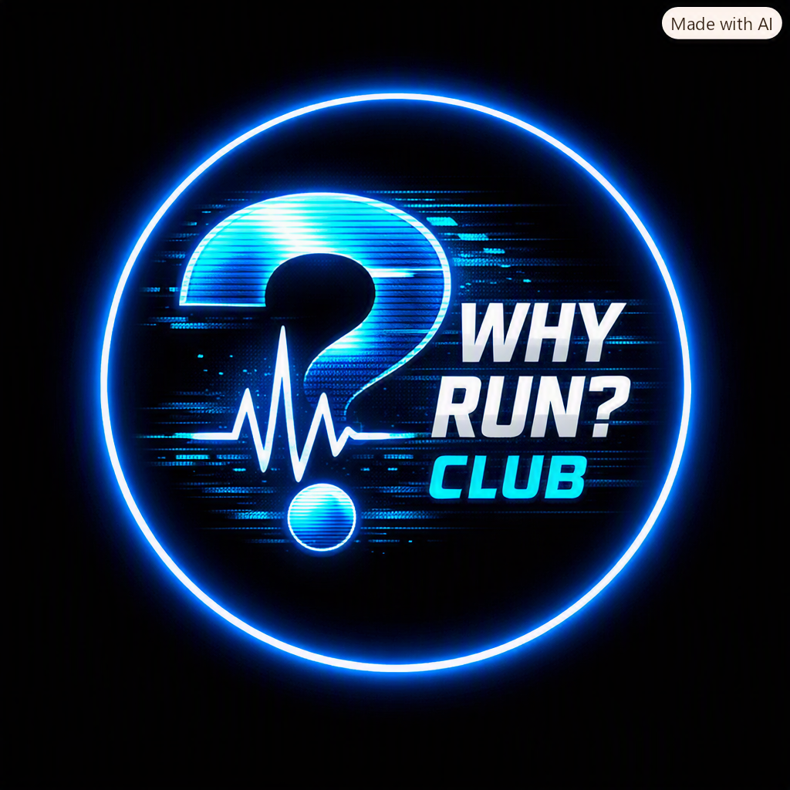

Running with Purpose
Discover how heart‑rate training transforms your mindset and performance.
Read More →
Stories, insights, and training from the Why Run? Club community.
Discover how heart‑rate training transforms your mindset and performance.
Read More →How we use sensors, data, and dashboards to make every run smarter.
Read More →Meet the runners redefining what it means to run with purpose.
Read More →